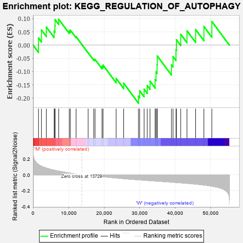
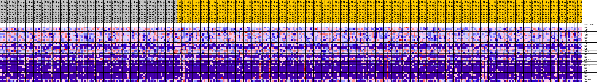
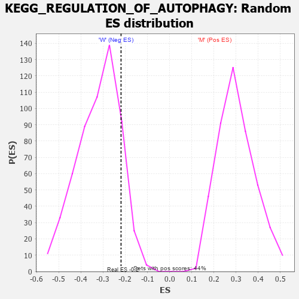

| Dataset | MUC16.MUC16.cls#M_versus_W.MUC16.cls#M_versus_W_repos |
| Phenotype | MUC16.cls#M_versus_W_repos |
| Upregulated in class | W |
| GeneSet | KEGG_REGULATION_OF_AUTOPHAGY |
| Enrichment Score (ES) | -0.21907383 |
| Normalized Enrichment Score (NES) | -0.6818971 |
| Nominal p-value | 0.8660714 |
| FDR q-value | 0.982656 |
| FWER p-Value | 1.0 |

| PROBE | DESCRIPTION (from dataset) | GENE SYMBOL | GENE_TITLE | RANK IN GENE LIST | RANK METRIC SCORE | RUNNING ES | CORE ENRICHMENT | |
|---|---|---|---|---|---|---|---|---|
| 1 | ATG3 | na | 1533 | 0.131 | 0.0269 | No | ||
| 2 | ATG4D | na | 2369 | 0.108 | 0.0571 | No | ||
| 3 | ATG7 | na | 3738 | 0.085 | 0.0681 | No | ||
| 4 | BECN1 | na | 5936 | 0.060 | 0.0533 | No | ||
| 5 | ATG4A | na | 6172 | 0.057 | 0.0729 | No | ||
| 6 | PIK3R4 | na | 6193 | 0.057 | 0.0963 | No | ||
| 7 | PRKAA1 | na | 7226 | 0.047 | 0.0974 | No | ||
| 8 | ATG5 | na | 10191 | 0.023 | 0.0535 | No | ||
| 9 | PIK3C3 | na | 10518 | 0.021 | 0.0563 | No | ||
| 10 | ATG12 | na | 12118 | 0.010 | 0.0317 | No | ||
| 11 | ATG4B | na | 15510 | -0.002 | -0.0288 | No | ||
| 12 | IFNG | na | 17090 | -0.011 | -0.0528 | No | ||
| 13 | IFNA4 | na | 17462 | -0.013 | -0.0542 | No | ||
| 14 | BECN2 | na | 19425 | -0.023 | -0.0803 | No | ||
| 15 | ATG4C | na | 19712 | -0.024 | -0.0754 | No | ||
| 16 | GABARAP | na | 23398 | -0.040 | -0.1254 | No | ||
| 17 | ULK1 | na | 25522 | -0.048 | -0.1437 | No | ||
| 18 | ULK2 | na | 29684 | -0.063 | -0.1927 | Yes | ||
| 19 | IFNA17 | na | 30021 | -0.064 | -0.1720 | Yes | ||
| 20 | IFNA1 | na | 31272 | -0.068 | -0.1662 | Yes | ||
| 21 | GABARAPL2 | na | 32162 | -0.071 | -0.1527 | Yes | ||
| 22 | IFNA8 | na | 32939 | -0.073 | -0.1361 | Yes | ||
| 23 | IFNA21 | na | 34371 | -0.078 | -0.1294 | Yes | ||
| 24 | IFNA2 | na | 34628 | -0.079 | -0.1011 | Yes | ||
| 25 | AC091230.1 | na | 34924 | -0.080 | -0.0731 | Yes | ||
| 26 | IFNA16 | na | 34991 | -0.080 | -0.0410 | Yes | ||
| 27 | IFNA10 | na | 38975 | -0.092 | -0.0745 | Yes | ||
| 28 | IFNA7 | na | 39420 | -0.094 | -0.0433 | Yes | ||
| 29 | IFNA13 | na | 40258 | -0.096 | -0.0181 | Yes | ||
| 30 | IFNA5 | na | 40388 | -0.097 | 0.0201 | Yes | ||
| 31 | IFNA6 | na | 41584 | -0.101 | 0.0408 | Yes | ||
| 32 | IFNA14 | na | 43350 | -0.107 | 0.0538 | Yes | ||
| 33 | INS | na | 45785 | -0.117 | 0.0586 | Yes | ||
| 34 | GABARAPL1 | na | 48115 | -0.128 | 0.0700 | Yes | ||
| 35 | PRKAA2 | na | 50352 | -0.142 | 0.0890 | Yes |

